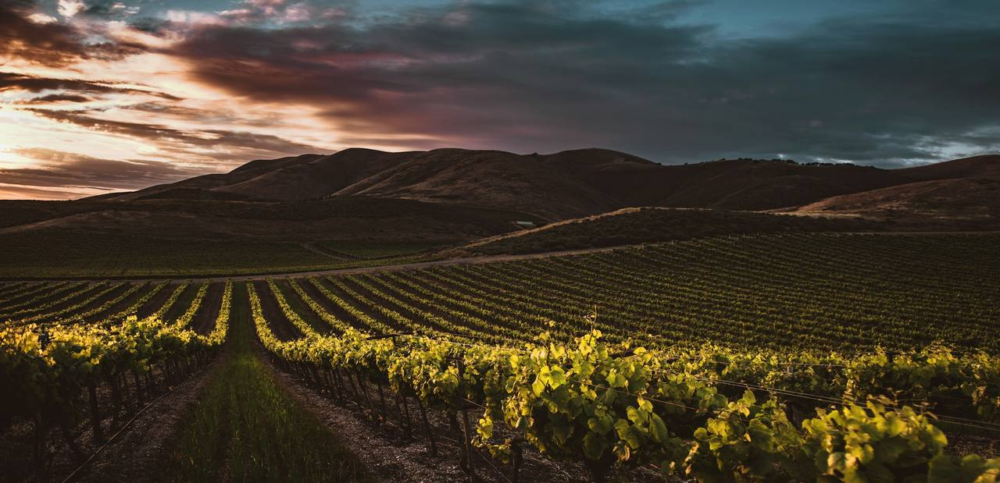
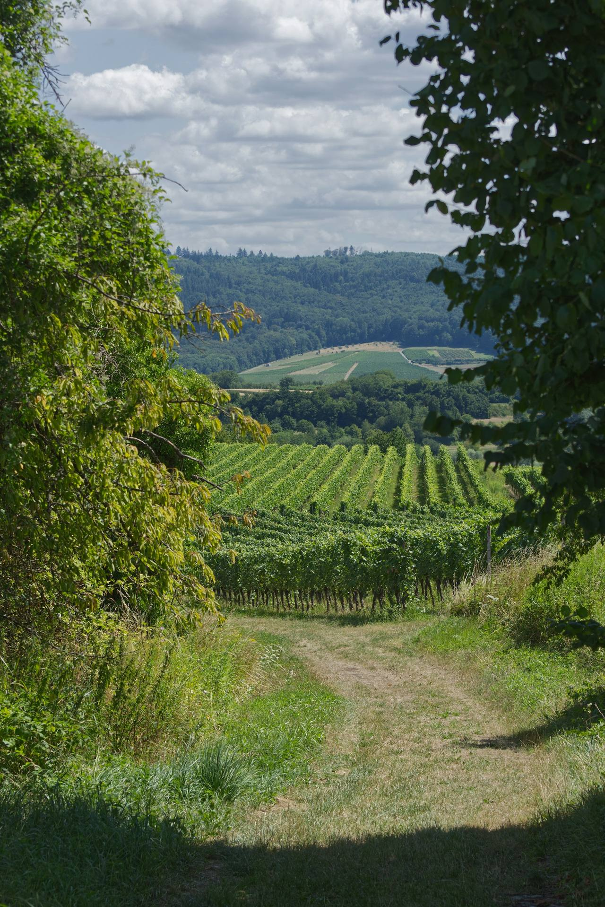
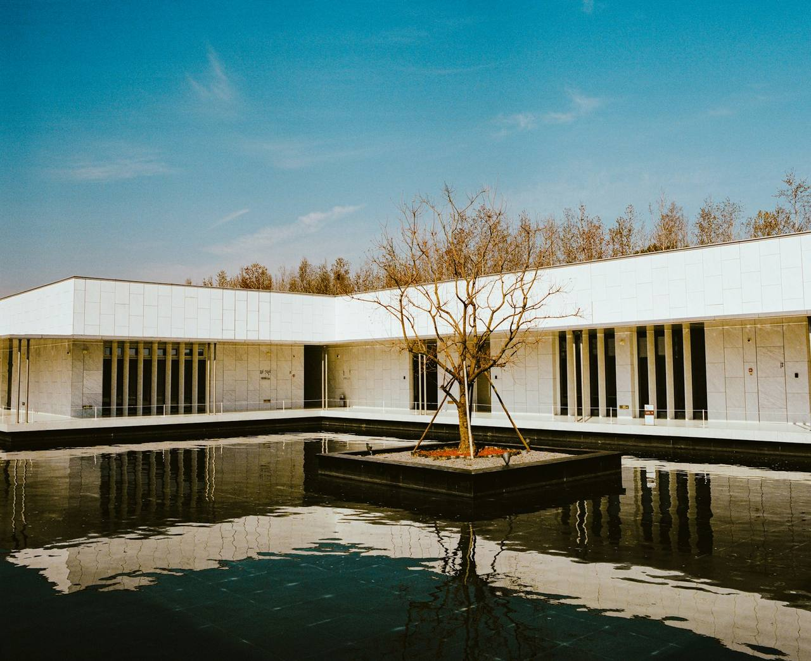
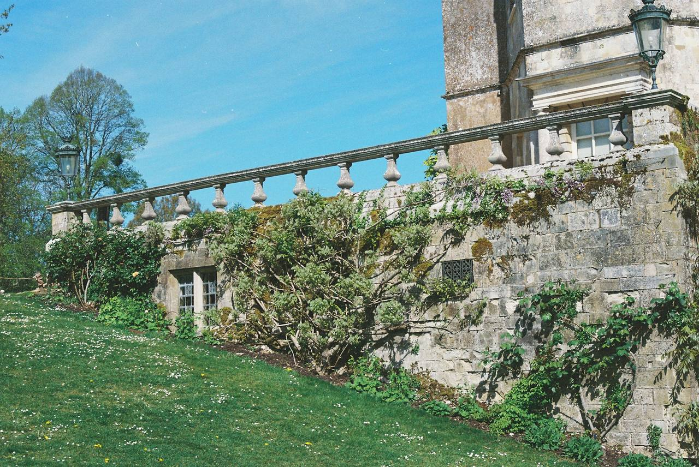
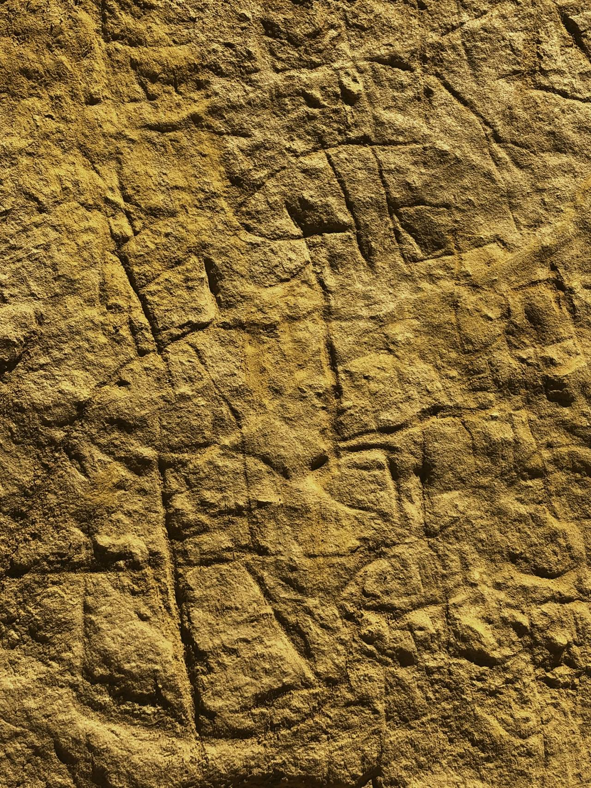
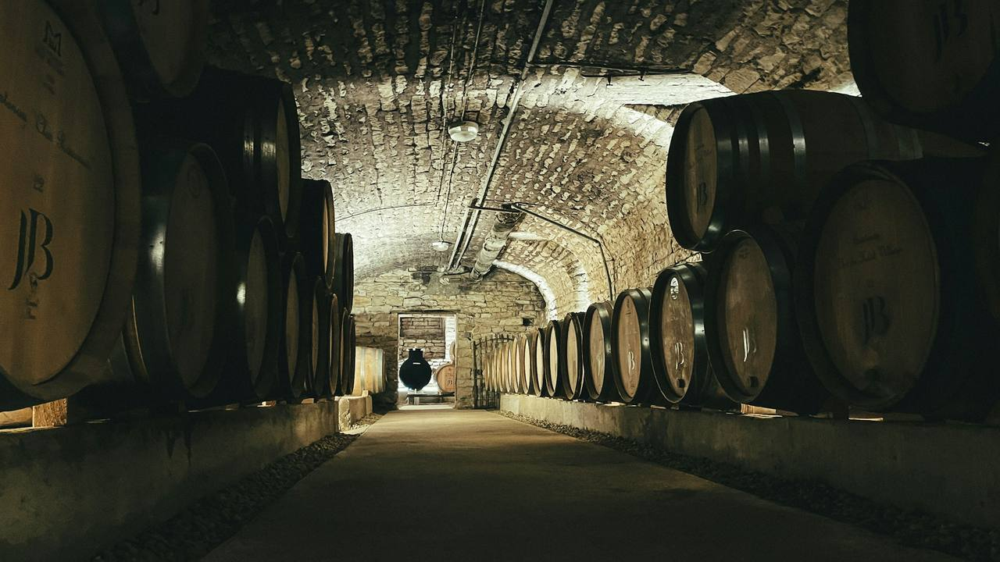
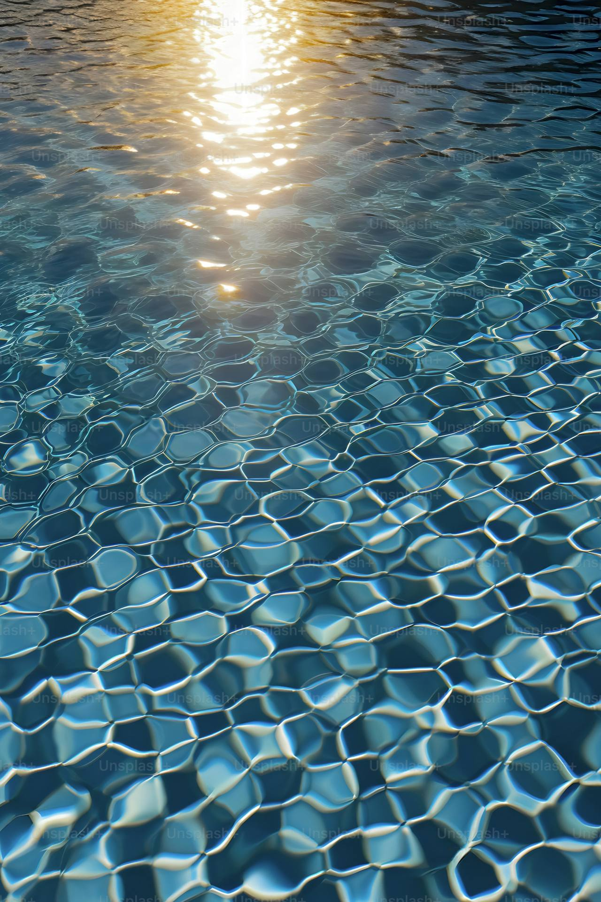
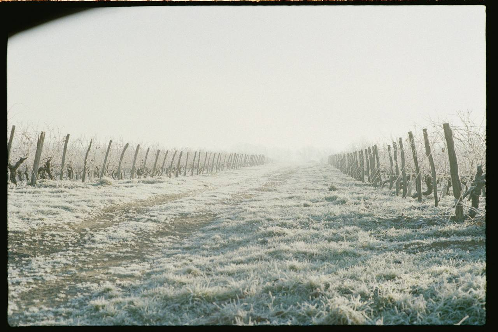
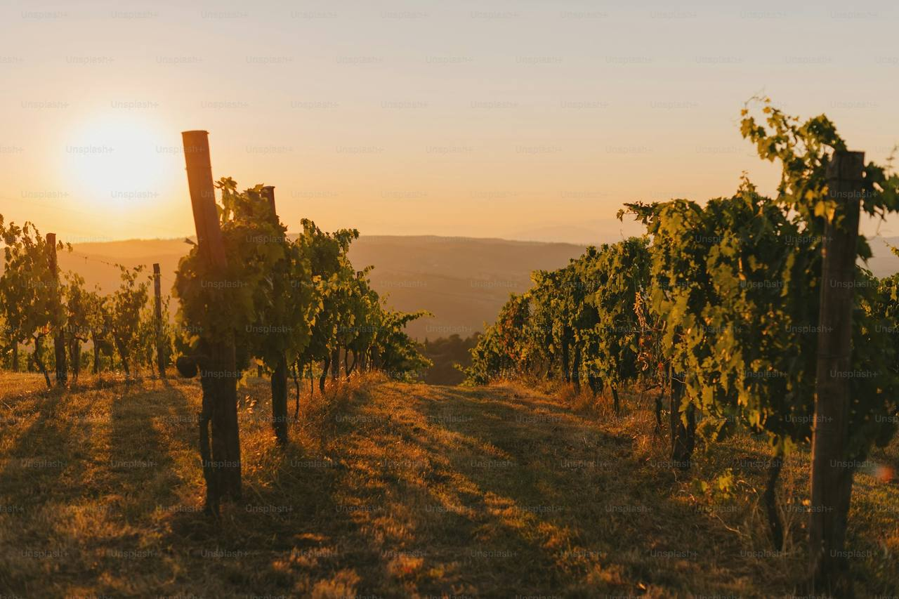

Folded Earth
A vineyard guesthouse folded from the ground it stands on: rammed earth, schist and shade.
Design narrative
The vineyard had already done the earthworks. We asked to borrow them.
Folded Earth sits on a schist shoulder above the Carrick Range, in a vineyard whose soil is famously thin over stone. Rather than truck in structure, the guesthouse is built from the excavation itself: site soil, stabilised and rammed in half-metre lifts, its strata left visible as a record of where it came from.
Two earth walls fold around a shaded courtyard and a long reflecting pool, which works like a cellar door you can swim past: it cools the summer afternoons and hands its warmth back to the guest suites through the frosts. Sleeping rooms press into the hill; the living pavilion opens through a wall of glass to the vine rows and the mountains beyond.
Schist is the second material, in the wall bases, the courtyard paving and the cellar set half below ground at the courtyard's end. In a climate of hot days and hard frosts the building keeps its warmth the way the region's oldest huts do: in mass, not machinery.
Material palette
Drawn from the siteThe guesthouse in eight views
Select any image to enlarge






